19/10/2000: Depart Jamaica, Air Jamaica flight JM001. Kingston
to MoBay was a fairly empty flight then people came on in MoBay to
fill the flight. Lovely kid in the row in front of me - obviously
had enjoyed a good holiday and was heading home. The lady next to
me was a retired grandmother setting up a house in Montego Bay and
returning to England.
Arrived Heathrow on time at 3pm, 21/10/2000. By the time I had
cleared the airport and got into London it was 6pm. Ian Little met
me at Leyton station and dropped me to his house but then had to
head out. Made a few calls to Robert, Vaniah and Julia, then went
back into London to meet V. Ended the evening at her (very nice)
new apartment near Canary Wharf, then back to Leytonstone.
22/10/2000: A slow start to the day, but headed into central London
around noon to sort out coach tickets and generally wander. I
eventually made my way out to Wembley Park to catch up with Richild
and Robert. Richild was in UK for the weekend before returning to
Luxembourg to finish a contract there. Robert went off to Sunday
dinner with family friends and Richild and I headed in to find
Vaniah. We again ended up in Vaniah's apartment dining on soup and
pizza. Unfortunately we stayed too late and missed the last train
from Stratford. Richild went off to find a taxi and I walked ~3
miles back to Ian's place.
23/10/2000: Having not spent any time catching up with Ian, I
chatted briefly with him in the morning before he went off to work.
I then packed up to leave. Robert called and got directions to meet
me at Leytonstone but unfortunately I had to leave before he
arrived. As it was, I arrived at Victoria Coach Station and stepped
straight onto the Victoria-Plymouth coach. An uneventful trip
followed, ending with my arrival in Plymouth at 16:30 with time to
kill.
I called Ellie, who turned out to be 1 1/2 hours away by car. I
wandered into main street Plymouth before meeting her at the coach
station. It was wonderful to see her again - she is such a great
friend.
We made our way to the ferry port and found Robert Wilson, then
headed into Plymouth to a pub in the Hoe, before heading back to the
ferry port ~21:00.
24/10/2000: The ferry crossing was uneventful and we arrived in
Roscoff at 8:00 in pitch black. The sun rose ~8:30 while we were en
route to Morlaix by bus. Morlaix to Rennes by train. Rennes to
Nantes by train. Nantes to La Rochelle by train. Arrived La
Rochelle 15:45. Painless trip, but a bit dull. We decided to walk
from the train station into La Rochelle Ville to find the boat.
This took some doing as there are thousands of boats here. Finally
Vicky saw us and came over. Harry was already aboard, having come
on the morning train from Paris.
25/10/2000: We spent Wednesday getting settled. Bags were unpacked
and stowed, the major functions of the boat were explained, etc.
Various Amel support people came aboard to fix the satphone and
discuss issues to do with boat registration.
It also became clear that the shipment of boat supplies is missing.
Last seen in Rotterdam on October 9th.
26/10/2000: Various faxes and phone calls were made to try and
locate the missing shipment. We went into town for a look and found
the market in the old town. That afternoon Olivier took the boat
out for a sail so we could see how things worked. It was a lovely
clear day.
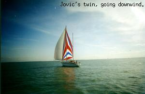
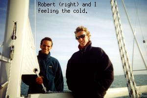
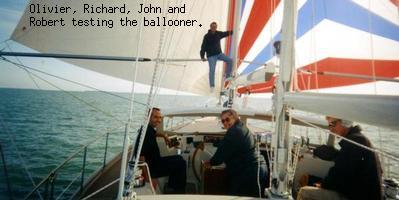
26/10/2000: We spent the morning touring the Amel factory. A
fascinating operation. We saw 9 boats in various stages of
production and a 10th just begun.
I wandered the town in the afternoon looking at a vast collection of
boats including what looked like an Open 60. The sailing here is
fantastic, with fleets of dinghies, cats and sport boats operating
out of a sailing school in our marina, Le Port des Minimes. Every
weekday there are classes and windsurfers out in the bay.
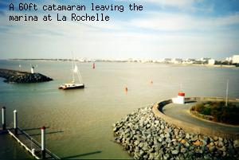
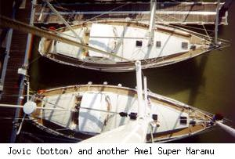
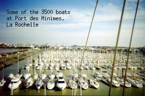
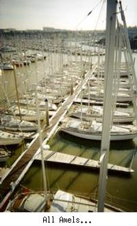
27/10/2000: Friday. Peter arrived and we heard that the mysterious
shipment had arrived in La Rochelle and would be cleared on Monday.
28/10/2000: There are loads of races going on. People seem to
arrive here on Friday night and spend the weekend sailing. There
are groups of mobile homes by the dinghy park and the cruisers have
been streaming out as well.
The day dawned blustery with ~20 kts of wind and overcast skies. I
went with Harry, John and Vicky to the chandlers and to the
Carrefour (a huge supermarket). On our return a 45kt squall with
rain swept across the harbour. The breeze kept up after this
squall, settling at 25kts from the North-NorthWest.
29/10/2000: Harry, Peter, Robert and I drove 100 km to Les Sables de
Olonne to look at the Vendee Globe racers. There were huge crowds
viewing the 24 entrants and the adjacent sponsors exhibit hall.
These non-stop round the world racers depart Les Sables de Olonne
on 5/11/2000, heading for the southern ocean. Expected race
duration is just over 100 days.
We returned to find that the breeze was still blowing although it
had shifted slightly to the West and South of West. It continued to
blow steadily throughout the night.
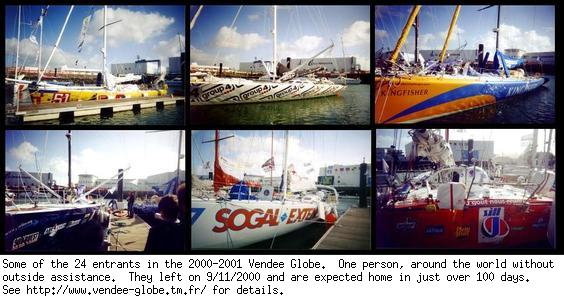
30/11/2000 Today (Monday). The barometer has fallen to 995
millibars and the wind has not been below 20kts occasionally
gusting to 45kts, from the SouthWest. No sign of the shipment yet,
or of the professional skipper, who was due to arrive yesterday.
As of 18:00 the breeze had not abated. Pressure was rising however
and I was hopeful for improved weather in the morning.
31/10/2000: Woke up with a sore head from a night out. Clear blue
sky with light breeze West-SouthWest. Headed into town on foot via
the Maritime Museum. A round the world boat "Joshua" is on display
here as are "Pen Duick II" and "Pen Duick V". Started to rain at
this point so we had to seek shelter.
The forecast for the next few days is bad and tomorrow is a holiday
(All Saints Day) so departure has been pushed back. ETD is now
Saturday and I am getting very frustrated. I am tempted to head
back to Paris to see Nora or to Edinborough to see Julia. Hopefully
we will get moving.
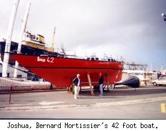
2/11/2000: Yesterday was All Saints Day - a public holiday here. As
expected the breeze filled in, with occasional rain squalls. We are
reasnably comfortable at dock but it is probably best not to
consider venturing out until this passes. The boat is largely ready
to depart although the official registration papers are not here,
the boat has not yet been provisioned and the compass must be
recalibrated.
Once this is all done and the weather becomes favourable we can
finally get underway. The ennui of sitting around for days on end
resulted in an epic night out yesterday. Starting at 10pm with Le
Jam - African Rhythms. We closed this first bar at 2am then went
into town with a bartender there - Fab was his name. The 5 of us -
Fab, Peter, Harry, Robert and I - piled into Fab's car and wandered
into La Rochelle Ville to a small private club. We were the last to
leave there as well, at 5am in search of coffee and croissants.
Harry and I walked back to the boat while the others drove,
eventually getting croissants by knocking on bakery doors at 5am!
After a good sleep I am ready to repeat this again tonight.
3/11/2000: 10:00 - We have got the disappointing news that we will
be here at least 3 more days waiting for a break in the weather.
This is pushing back our arrival date in the Canries as well and I
may be forced to leave the boat when we get to Spain. In the
meantime I am casting around for something to do this weekend. I
will call Nora in Paris and go to visit her.
3/11/2000: 21:00 - I
have just spoken to Nora who is leaving Paris for the weekend. This
confirms that I will be staying here until we leave whenever that
is. Nora asked if I was bored with La Rochelle. I would have to
say yes - and no. The forced solitude of being a visitor in a land
where I do not speak the language has forced me into some not
unpleasant introspection. Yes I am understimulated, but it is quite
peaceful here. The lashings of rain and breeze would seem to be a
hardship, but they suit my mood. Enduring hardship gives me
strength and perserverance and familiarity with my environs has
given them a certain inner beauty. The desolate sea wall, the harsh
lights on the green-brown soup of the marina waters, the low
scudding clouds - these are a comfort and a familiar backdrop.
Outside the marina the protected bay offers a deceptively calm
invitation yet beyond that the Bay of Biscay beckons, with its sure
promise of discomfort. Beyond that I know not what. Most likely a
hurried arrival in Las Palmas followed by a flight to England and
back home to an environment I have started to forget. This prospect
of return is a disquieting one. There were many things I left
undone when I departed. I do not know which would be worse - to
face recrimination for my shortcomings, or to find that they are
only significant to me. Only time will tell and there are many
miles to travel before then.
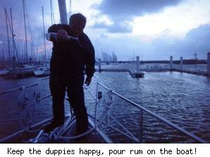
4/11/2000: La Rochelle Ville. Port Les Minimes. 46 degrees 08.809
minutes N, 1 degree 09.999 minutes W.
The 5 day forecast is grim. Good weather today but not tomorrow.
Through Monday is predicted to be horrible, force 9 to 10 winds.
This morning began clear and warm with winds under 10 knots.
Gradually clouds have filled in but the barometer has not yet begun
to fall. We went for a shakedown sail and the boat handles well
given enough breeze although she struggles to go to weather and
occassionally kicks up spray over the bow. We did not get a chance
to see her response to swell - that will have to wait until the
journey begins.
Our plans are, as ever, in flux. The latest proposal is to take on
the final member of our crew here and set sail directly for Las
Palmas to save time. We will not take the professional skipper with
us in this case and will not stop unless needeed. Even so it
appears unlikely that we will make it to the Canaries before the
14th or 15th. I am booked to leave London on the 19th, so I will
probably have to leave Las Palmas as soon as we arrive or change my
flight. This has become a horribly wasted trip and I will have to
consider carefully before I go on this kind of delivery trip. I
will enjoy it, I'm sure, but it is keeping me away from
responsibilities that I have not been able or willing to put aside.
I should not be overly concerned. Harry and Peter are under similar
pressure and those who are staying with the boat would like to reach
Las Palmas in time to resupply and start the ARC on the 19th, so we
will all be pulling together to make the best possible time.
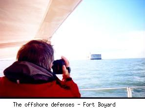
6/11/2000: Yesterday was spent in a state of limbo. The predicted
gales have hit and the barometer has dropped as the winds rose. The
sky has been filled with scudding clouds so low it seemed as though
you could reach up and touch them, scratching the scaly belly of the
dragon while listening to his howling breath.
Today is expected to be much the same. There is as yet no sign of
the workers expected to arrive to configure the navigation and
communication systems and I feel that this is yet another delay
thrown in our path. We sit here doubled lines all round and wait
and wait and wait.
~19:30. This incredibly shitty day rolls on. The Vendee Globe
racers have postponed their start, 35 miles North, because of the
bad conditions. 12 metre waves have been reported in the Bay of
Biscay and the conditions may not be substantially improved before
Thursday. I am seriously considering packing it in and going back
to UK. I will have to get into town early tomorrow to check my mail
and see what my options are.
8/11/2000: We are to set sail tomorrow at 6am to get out before low
tide. All the preparations have been made and bills paid and it
looks like it will actually happen this time. I have been in La
Rochelle for 15 days and will not miss the place.
It will probably be an uncomfortable trip, but moving forward -
regardless of the effort - is infinitely better that standing still.
I have not said any goodbyes. I should have called my parents, to
tell them I love them, Susy to tell her I will be back soon, and
Julia to say I hope to see her soon. As usual I am too busy talking
to myself to reach out and say what I feel to the people I love.
Anyway, we have an early start. The forcast is for low winds dying
further in the next 36 hours but the seas are expected to be rough
and I will not be surprised to be cold and wet. Thank God we are
finally moving.
1314UTC 10/11/2000. 44 degrees 54.468 minutes N, 5 degrees 28.400
minutes W. Course 247 degrees M, Speed 6.5 kts. We set off from La
Rochelle at dawn (4:50 UTC) yesterday. Dawn, swells, seagulls,
seasick, dusk, seasick, swells, squalls, cold, dolphins, 9kts
boatspeed, better, dawn in the sleeping bag, sun, sun, sun, flat
seas motorsailing to Spain.
2156UTC 10-11-2000. 44 degrees 26.879 minutes N, 6 degrees 36.496
minutes W. Motor, motor, motor. No useful breeze all day, but we
seem to be getting some assistance from the sails now. The calm
conditions have helped me get over my seasickness, but I will have
to cautious if we encounter any rough stuff. Apart from that we
plod on fighting tedium and getting there, minute by minute.
I am working my way through a list of navigation systems that still
need tweaking and integrating, but this is as much to keep busy as
anything else.
18:17UTC 12/11/2000. 42 degrees 37.236 minutes N, 10 degrees 17.451
minutes W. I have lost track of time. We are finally moving well
againafter slowing down to let bad weather through. We are now
clear of the Bay of Biscay, on course for Las Palmas with 900
nautical miles to go.
13:55 13-11-2000. 40 degrees 20.502 minutes N, 11 degrees 25.046
minutes W. Progress continues. The boat has been sailing well all
last night and today. The crew at last appears to be fully rested
and adapted to life on board. As mentioned previously I have lost
all track of time. I am told that today is Monday, but the word
holds no relevance here.
The attitude on board is to keep going as fast as confortable and to
deal with onward travel plans when we arrive at Las Palmas. Making
plans before then serves no purpose since we are still very much at
the whim of wind and sea. Conditions now are good, but the
boatspeed has dropped from its highs overnight.
2107 13-11-2000. 39 degrees 33.839 minutes N, 11 degrees 51.497
minutes W. Just overheard a conversation between QE2 and an
unidentified Vendee Globe boat. He reports that one of the racers
has dropped out with a broken mast.
As for us, we charge south, making good speed on a direct course for
Las Palmas. Steady speeds of 7kts with surges in the squalls. As I
write this we have just seen 10.5kts in a cloudburst. Onward.
1436 14-11-2000. 37 degrees 34.587 minutes N, 12 degrees 34.270
minutes W. Caught a fish about an hour ago. It looks like about an
8lb tuna which I have landed, cleaned and gutted and Harry has
offered to cook for dinner. Everyone is in good spirits and we roll
generally south.
The breeze prevents the direct course to the Canaries at the moment
but we are still making good speed in approximately the right
direction. If there is no change in the next 24 hours we will have
to think about jibing to get further East but right now we are happy
on this heading (about 230 degrees).
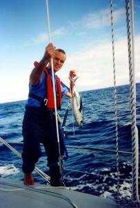
1946UTC 15-11-2000. 34 degrees 24.911 minutes N, 13 degrees 49.637
minutes W. Finally got the ballooner up this afternoon and we are
on a direct course and making reasonable time. Sally was right when
she said the worst part of long distances was finding something to
pass the time. I'm ready to go home now. Still 400+ miles to go so
we will have to fight tedium for a while yet. This cruising rig
boasts simplicity but it removes the simple tasks like sail trim and
hand steering that we have been using to pass time when on watch.
1416UTC 16-11-2000. 32 degrees 17.828 minutes N, 14 degrees 19.248
minutes W. It seems that we may finish this trip the same way it
began, motoring in insufficient breeze. This is mostly to ensure a
timely arrival since we could probably ghost along at 5kts under
sail, but it is also more comfortable to motor with the sea coming
from behind.
There is a significant list of things to be done upon arrival in Las
Palmas both by those leaving and by the crew who will be doing the
transAtlantic leg so expect the shipboard tupour to be very sharply
disturbed.
Things you do when you are bored...
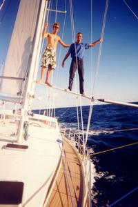
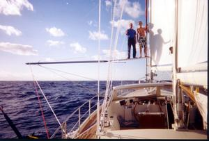
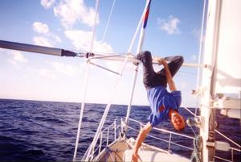
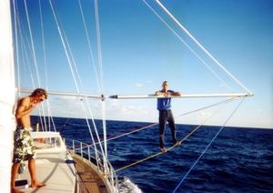
2059 16-11-2000. Just broke the 200nm barrier - if that means
anything.
21/11/2000: Apparently, breaking the 200nm barrier means you stop
recording what you are doing and start living in the moment instead.
With Las Palmas looming ever closer the shipboard routine changed
hour by hour. First it was "the last night watch", then "the last
dawn", then get the luggage out, start sorting in preparation for
packing.
No sign of land when I went off watch. A few hours later Harry
announced "Land Ho". It takes a bit of immagination but we can just
make out the hills in the haze.
As night fell the lights became visible. We got ever closer and
then began picking our way through the ships and into the marina.
Finally lines ashore and tied off at 2140UTC 17/11/2000, 1500 miles
travelled since La Rochelle.
After a few drinks and rounds of photos Robert and I headed ashore,
followed shortly by the rest. I got the guided tour of the marina
and adjoining beach which Robert knows all too well from his last
stay in Las Palmas. Then we met his old skipper from ARC99, Petar
and had a chat and a drink. Eventually that bar closed so Robert,
Peter, Harry and I went a short way into town to the ARC party where
a good time was had by all.
Up bright and early on Saturday for a whirlwind of activity. Jovic
was assigned a berth, then while John went to Check in at the ARC
office, the safety officer gave Jovic the once over. Then we moved
to the new berth all the wall with artwork done by previous ARC
entrants. Peter and I headed into town and booked tickets out then
went back to the boat, picked up luggage and said goodbyes and
headed to the airport.
I don't know if the trip to the airport is representative of Gran
Canaria, but it was a half-hour journey across the surface of the
moon. A bare, dry, blasted landscape where the most prevalent
feature is precarious slopes of gravel and grey-brown scree as far
as the eye can see. What little agriculture there was was swathed
in plastic to keep the moisture in and the dust out and the tunnel
we drove through is a testament to the rugged nature of the land.
We flew from Las Plamas to madrid and then from Madrid to London
arriving there at 21:30. Checked into the Heathrow Rennaissance
(very nice) and spent the night before returning to the airport to
spend the entire day getting back here. It's fun to travel but it
is nice to be back home again.
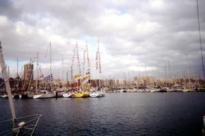
F I N I S